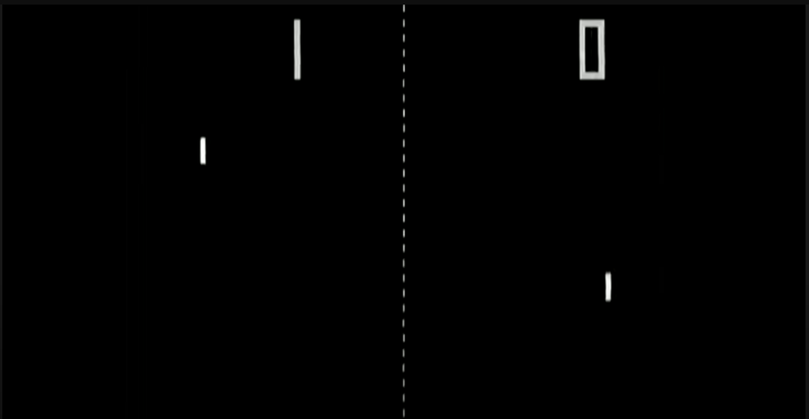
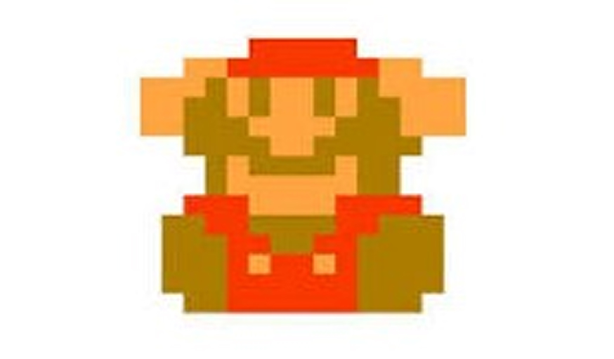
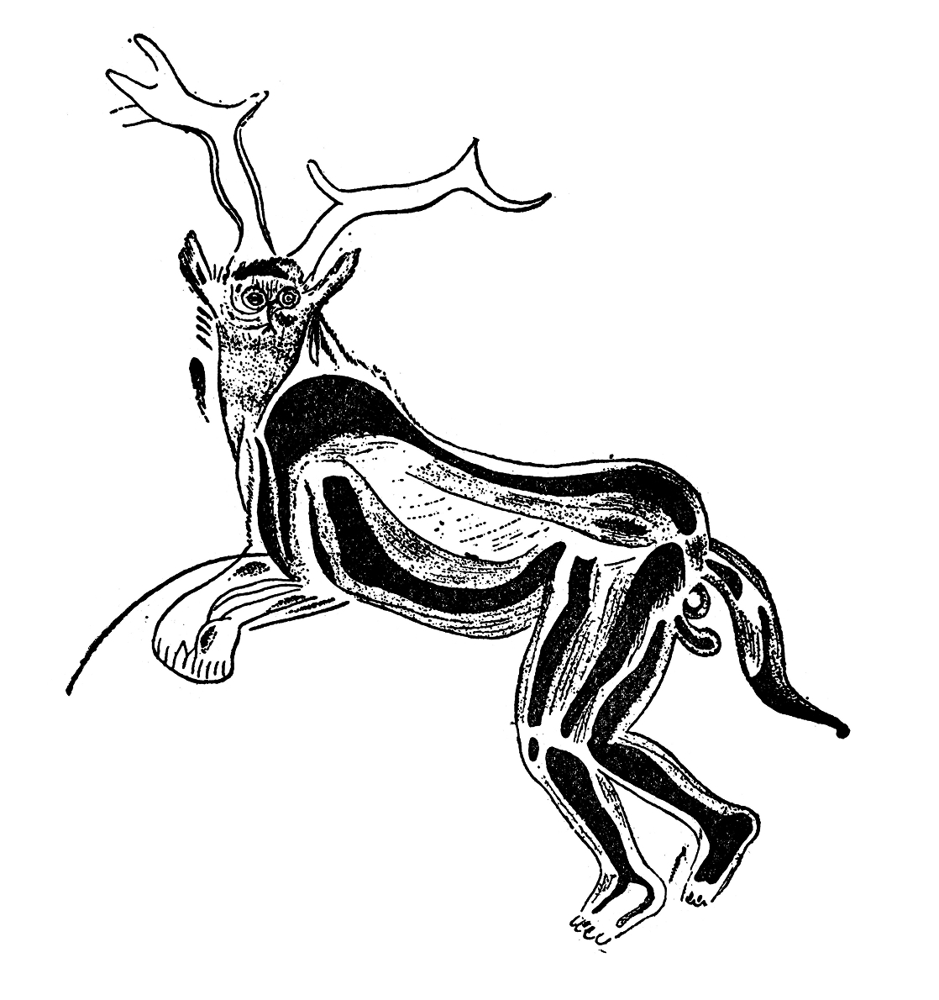

Au-delà du Miquiztli
Mort et transformation dans les récits videoludiques

CASTILLO SANCHEZ Xcaret
sous la direction de David-Olivier Lartigaud
memoire de fin d'étude dnsep mention création numerique
ESADSE 2026
Préambule
J'ai grandi avec deux certitudes contradictoires. La première : que la mort n'était pas une fin. Chaque novembre, ma famille préparait des autels pour nos défunts, déposant du arroz con leche, des fleurs de cempasúchilet des photographies jaunies. On me disait qu'ils revenaient nous voir, que la frontière entre la vie et la mort n'était qu'un voile fin, traversable une fois par an. La mort, dans ma culture, était un voyage long, périlleux, mais navigable.
La seconde certitude : que mourir dans un jeu vidéo était une catastrophe. Un écran rouge. Un GAME OVER brutal. La frustration de recommencer, encore et encore, jusqu'à ce que mes doigts connaissent par cœur chaque saut, chaque ennemi, chaque piège. La mort, dans ce monde-là, était une punition. Pendant longtemps, j'ai cru que ces deux visions n'avaient rien en commun. Puis, un jour, j'ai joué à Red Dead Redemption 2. J'ai vu Arthur Morgan se traîner jusqu'au bord d'une montagne pour contempler son dernier lever de soleil, accompagné d'un cerf spirituel. Et quelque chose a résonné en moi. Ce n'était pas un GAME OVER. C'était autre chose.
Introduction
Comme beaucoup d’autres civilisations passées ayant aussi médité sur la mortalité et la transcendance, cet ancien poème du tlatoani Nezahualcóyotl montre que la culture Mexica prenait en compte le caractère éphémère de la vie. Ce poème pousse le lecteur à la réflexion sur la nature de l’existence humaine, loin de toute caricature coloniale.
Je l’ai mis en tête de ce mémoire car il incarne une quête humaine universelle pour comprendre la vie et la mort, une thématique essentielle que je souhaite explorer à travers le prisme des jeux vidéo.
Mais la mort peut aussi être un élément participant d’une narration propre au jeu, comme dans Red Dead Redemption 2, où elle devient le moteur même de l’histoire et conduit le joueur à réfléchir à la fatalité, à la rédemption et à la transformation des personnages. Dans certains jeux, elle peut même être littéralement “jouée”, comme dans Death Coming (Next Studio – 2017).
Au travers de cette caractéristique, l’utilisateur n’est plus un observateur ; il est capable de “vivre la mort”, de la manipuler et de l’observer. La mort devient ainsi plus qu’un simple GAME OVER, qu'un “échec” ou qu’une “fin de partie”. La mort, comme avatar, personnage ou comme ressort scénaristique du jeu, se transforme en un outil narratif symbolique et parfois émotionnel qui exerce une forte influence sur les utilisateurs.
Typiquement, dans des jeux tels que Journey, Shadow of the Colossus ou Hellblade: Senua's Sacrifice, la mort n’est plus une défaite. Elle peut représenter un pas nécessaire dans le récit ou un moment de transformation. Dans d’autres cas, elle bifurque vers une expérience impactante, parfois libératrice et d’autres fois plus bouleversantes.
Ce mémoire propose d’explorer comment on peut représenter la mort dans les jeux vidéo et de quelle façon elle affecte les perceptions et les émotions de l’utilisateur. Je vais particulièrement me centrer sur l’utilisation des éléments narratifs et l’évolution du design interactif à travers le temps. Ces éléments participent à la création d’une expérience émotionnelle intense et unique pour l’utilisateur, permettant de le connecter d'une manière profonde avec le récit du jeu.
Du fait de mon intérêt pour la manière dont la culture mexicaine aborde la mort, je souhaite aussi établir des liens avec la cosmovision aztèque, spécialement le lieu des morts appelé Mictlán et mon intérêt pour le dieu Quetzalcóatl, qui se retrouve contraint d’accepter sa propre mortalité. La vision aztèque a beaucoup inspiré ma propre vision et j’y vois un lien avec la conception et la narration au sein des jeux vidéo contemporains. C’est cette relation, qui semble inattendue au premier abord, que je vais tenter d’expliciter dans la suite de cet écrit.
I. El Mictlán comme miroir de l’Introspection
La mort est définie par l'Académie mexicaine de la langue comme la “fin de la vie” et comme la “destruction ou fin de quelque chose” (Colegio de México, Muerte, s.d ). La mort dans la culture préhispanique nous ouvre une autre façon de concevoir la mort. Pendant qu’en occident, on la voit habituellement comme la fin de tout, les mexicas l’entendait comme une partie en plus du cycle de la vie. Quelque chose de très naturel comme le jour et la nuit. Cette manière de percevoir la mort n’a pas seulement une valeur historique, elle est également inspirante pour la façon de se représenter la mort aujourd'hui.
1.Dualité vie-mort et Ometéotl
Les anciens Mexicains n’étaient pas opposés à l’idée de mourir, qu’il considérait comme l’alternance de la lune et du soleil. Leur vision de celle-ci était donc inspirée par la “danse des astres” (Motolinia, 1903, chapitre 27). Depuis la création de l’humanité, nous sommes témoins chaque jour de cette danse, où l’on observe le cycle lunaire et solaire débutant à chaque crépuscule avec la mort du soleil. Pendant la nuit, le soleil traverse l’inframonde, appelé le Mictlán, pour finalement renaître à l’aube.
Ce cycle est également profondément enraciné dans les traditions mexicas, illustrant le caractère cyclique de la vie et l'importance de l'énergie duale, appelée Ometéotl. Cette dualité est présente dans la pluie et la sécheresse, la vie et la mort, le sexe masculin et féminin et représente fortement un équilibre cosmique. Miguel León Portilla souligne qu'Ometéotl est le principe dual, également connu sous les noms d’Ometecuhtli et d’Omecihuatl, le couple créateur, qui seraient au fondement de l'existence même (León Portilla, 1974. p.89). Aussi appelé "dieu double " ou "dieu de la dualité ", l’Ometéotl réside dans l’Omeyocan, “ le lieu de la dualité ". Cet être observe et maintient l'ordre et l'harmonie universel sans nécessairement intervenir dans le destin des hommes.
“Dès son enfance, on disait au Mexicain qu’il était venu au monde pour offrir son cœur et son sang à” notre mère et notre père ", la Terre et le Soleil.” (Soustelle, 1979, p. 12).
Par conséquent, pour eux, la mort était simplement un changement d’état. Leur existence se transformait et passait dans d'autres dimensions. Grâce à cette transition ils pouvaient contribuer au développement et à la fertilité de la mère terre.
“On sait que si l’on meurt tranquillement chez soi, les portes du Mictlán nous sont destinées” (Soustelle, 1979, p. 12).
2.Qu'est-ce que le Mictlán?
Mictlán, également connu sous le nom de “ lieu des morts " ou “enfer” tel que l’appelaient les colons, se trouvait au bas du pays des défunts. L'itinéraire vers ce sanctuaire était long et risqué, comportait huit ou neuf étapes, selon les sources. Certains codex et chroniques coloniales mentionnent huit épreuves principales, tandis que d’autres décrivent neuf niveaux (Chicunamictlán signifiant littéralement “neuvième Mictlán”). Ces divergences reflètent la transmission partiellement orale de ces récits, leurs variations régionales, ou encore les réinterprétations issues de la 5période coloniale. J’ai choisi de conserver cette pluralité dans mon analyse afin de refléter la complexité des traditions mésoaméricaines.
Ce voyage attendait tous les défunts, qu’ils soient nobles ou paysans, sans considération de classe ou de richesse. La seule condition pour entrer était de mourir de façon naturelle, de vieillesse ou de maladies communes. On disait que le parcours prenait quatre ans et qu'à Mictlán, une fois les difficultés toutes surmontées, l'âme du défunt était reçue par Mictlantecuhtli et Mictecacíhuatl , les divinités du monde souterrain. Ces divinités lui signalaient la fin de ses souffrances : “ Tes peines ont disparu, va donc dormir de ton sommeil éternel ". Selon le Codex de Florence ce séjour serait définitif pour certains, tandis que pour d'autres ce ne serait qu'un endroit de passage. On retrouve également le Mictlán dans le mythe de la création de l’humanité. Quetzalcóatl doit alors, devant les dieux Mictlantecuhtli et Mictecacíhuatl, souffler dans sa conque afin de créer le son. En tant que dieu du vent, Quetzalcóatl insuffle son souffle divin dans le coquillage. Selon Johansson (2001, p.71), “ce souffle masculin pénètre dans un sens symboliquement sexuel la conque féminine, engendrant ainsi la vibration primordiale, le son, principe de vie et de communication entre les mondes”.
Plus contemporainement, les croyances liées au Mictlán se reflètent dans le Jour des Morts au Mexique, une fête où l’on perpétue la tradition préhispanique de laisser des offrandes pour accompagner l’âme de notre défunt, afin qu'il puisse accepter plus facilement sa mort et faciliter le voyage vers l’au-delà. Chacune des étapes traversées dans le Mictlán représente une épreuve pour l’esprit où l’âme va affronter ses peurs et l’essence de son être.

1.Apanohuaya (Itzcuintlán)
Signification : "Lieu des chiens" ou "Passage de l'eau"
Selon la tradition, l’âme devait d’abord traverser une rivière avec l’aide d’un Xoloitzcuintle (Le fameux ”chien nu” mexicain).
Dans la culture mexica, il était courant d’enterrer les morts avec les os d’un chien ou un Xoloitzcuintle sacrifié, afin que le défunt dispose d’un compagnon dans l’au-delà, assurant ainsi la bonne traversée de cette première étape.
2.Tepetl Monamicyan
Signification : "Lieu des collines qui se rejoignent"
Ce deuxième niveau était régi par Tepeyóllotl, le dieu des montagnes et des tremblements de terre. Le défunt se retrouvait face à deux collines gigantesques qui s’ouvraient et se refermaient constamment. Passer à travers ces collines au bon moment symbolisait la capacité à surmonter les obstacles et à faire preuve d’astuce.
Le resserrement des montagnes illustre la notion de danger permanent dans la vie : le monde est constamment en mouvement, et le défunt doit rester alerte et patient pour ne pas être "écrasé"par les épreuves.
3.Iztepetl
Signification : "La colline d’obsidienne"
Dans ce troisième niveau, le sentier était bordé de pointes d’obsidienne, pierre volcanique noire très prisée par les Mexicas pour la fabrication d’armes et l’accomplissement de rituels sacrés. Ici, l’obsidienne déchirait symboliquement la chair du voyageur, figurant la nécessité de se dépouiller des " impuretés " de la vie terrestre.
Pour les Anciens Mexicas, l’obsidienne était associée à la fois à la force et au pouvoir de la purification. La souffrance rencontrée à Iztepetl incarne le sacrifice et la purification spirituelle.
4.Itzehecayan
Signification : "Le lieu du vent d’obsidienne"
Ce quatrième niveau était décrit comme un lieu d’extrême froideur : des montagnes escarpées, recouvertes de neige, soumises à des vents glacés et tranchants. L’entité associée à ces vents violents est Mictlampaehecatl, chargé de disperser le froid sur la Terre.
Traverser Itzehecayan nécessitait une force intérieure particulière, puisqu’il fallait résister à la fois au froid mordant et aux vents perçants. Symboliquement, cette étape représente la résistance psychologique et spirituelle face à l’adversité.
5.Pancuetlacaloyan
Signification : "Lieu où les gens volent et se retournent comme des drapeaux"
À la fin d’Itzehecayan, dans ce cinquième niveau, les vents deviennent si violents que toute notion de pesanteur disparaît. Le défunt est alors emporté comme un chiffon ballote dans les airs. Cette perte de gravité et de contrôle peut traduire la nécessité d’abandonner tout attachement physique.
6.Temiminaloyan
Signification : "Lieu où l’on est transpercé par des flèches"
Dans ce sixième niveau, le défunt devait traverser un long sentier où des mains invisibles lançaient des flèches acérées depuis les deux côtés du chemin.
Selon certaines versions, ces flèches invisibles étaient celles des guerriers tombés, qui retrouvaient leur cible dans l’au-delà. (El Universal. (2024, 7 noviembre).
7.Teyollocualoyan
Signification : "Lieu où les jaguars dévorent le cœur"
Le septième niveau présente une épreuve radicale : des jaguars — animaux sacrés pour les cultures mésoaméricaines et étroitement liés à Tezcatlipoca, dieu de la nuit et du destin — déchiraient la poitrine du défunt pour lui dévorer le cœur.
Cet acte, d’une grande violence symbolique, incarne la séparation définitive entre l’âme et le corps physique. Le cœur étant le siège de la vitalité, l’offrir aux jaguars revient à un acte symbolique de renoncer à la dernière étincelle de vie terrestre. Ce sacrifice ultime est un passage nécessaire pour que l’âme se dégage complètement de sa condition matérielle.
8.Izmictlan Apochcalocan
Signification : "Lagune d’eaux noires"
Dans cet avant-dernier niveau, parfois appelé Apanohuacalhuia, le défunt se retrouvait face à une étendue d’eaux sombres. En y pénétrant, il se dépouillait de tout ce qui restait de sa chair. On dit que son tonalli (l’âme, l’énergie vitale) se séparait définitivement de ses liens corporels pour se libérer.
Ces eaux noires faisaient écho à l’obsidienne et à la puissance de Tezcatlipoca, dont le miroir fumant (tezcapoctli) servait à scruter le destin. Dans cette lagune, l’âme confrontait une dernière fois le reflet de ce qu’elle fut avant de se diluer dans l’immensité cosmique. C’est un stade de transformation totale, où l’être perd ses derniers vestiges physiques pour s’élever vers la finalité du Mictlán.
9.Chicunamictlan
Signification : "Le neuvième Mictlán"
Le neuvième et dernier niveau est décrit comme un lieu où le défunt doit traverser les neuf eaux de Chiconauhuapa. Souvent considéré comme "la confrontation finale". Au terme de ce passage, l’âme parvient à son état de libération complète : elle s’unit à l’univers, plongeant dans la paix éternelle. "C’est à ce moment que Mictlantecuhtli et Mictecacíhuatl, souverains du monde souterrain, accordent leur bénédiction finale, confirmant l’accomplissement du voyage et le repos définitif de l’âme" (Sahagún, B. de. (1880).
Cette présentation des 8 ou 9 étapes qui constituent le Mictlán permet de montrer les similitudes avec le “voyage du héros” tel que décrit dans le fameux livre de Joseph Campbell. Ce style de narration n'est pas seulement une bataille contre des forces extérieures, mais aussi une confrontation avec soi. Personnellement, ce voyage dans le Mictlán me fait penser à la relation que les Mexicas avait avec l'adoration du "miroir brumeux" Tezcatlipoca, l’entité de l'introspection et du destin, car chaque étape du Mictlán peut être vue comme une métaphore de nos luttes intérieures, où l’âme confronte ses peurs et ses attachements, s’efforce d’atteindre une transformation spirituelle. À l’image du miroir fumant de Tezcatlipoca, ce voyage invite à un regard sans complaisance sur soi-même, nécessaire pour accéder à une forme de paix intérieure. Cette déité représente la relativité des phénomènes, la conscience, le rêve et la rénovation de la nature. Elle est souvent comparée à Satan dans la doctrine chrétienne. Cependant, la théologie toltèque ne la voyait pas comme une entité indépendante, mais comme la fonction dialectique d'Ometeotl, et donc, comme une sorte de double de Quetzalcóatl. Cette dualité on la retrouve dans tout le panthéon mexica, par exemple dans les entités tels que Tláloc & Chalchiuhtlicue (eau), Tlaltecuhtli & Tlalcíhuatl (terre), (Robelo, 1905, p. 136). Mictlantecuhtli & Mictecacíhuatl (mort) y Xiuhtecuhtli & Chantico (feu). (Meza, 1981, p. 60–70).
3.Tezcatlipoca
En parallèle les entités créatrices sont appelées des Tezcatlipocas ses entités créatrices des dimensions de l'univers vertical et horizontal de la cosmogonie nahuatl, en prenant en compte les points cardinaux :
- Nord : Tezcatlipoca Noir/Tezcatlipoca
- Sud : Tezcatlipoca Bleu/ Huitzilopochtli
- Est : Tezcatlipoca Blanc/ Quetzalcóatl
- Ouest : Tezcatlipoca Rouge/ Xipetotec.
Tezcatlipoca représente non seulement l'introspection et la pluralité divine, mais aussi la connaissance de notre destin, un destin qu'il est lui-même chargé d'écrire. Selon la cosmovision mexica, ce dieu ne se contente pas d'observer notre essence profonde ; il la façonne et nous met à l'épreuve. Grâce au livre Tezcatlipoca. Burlas y metamorfosis de un dios azteca (Guilhem Olivier, 2004), j'ai découvert que l'existence de Tezcatlipoca incarne un miroir impitoyable de nos propres peurs, de cette part de nous-mêmes que nous préférons ignorer.
<>Lors de la descente de Quetzalcoatl sur Terre, sous la forme humaine de Ce Acatl , Tezcatlipoca l’a confronté à sa mortalité. Il lui a montré que même les dieux succombent aux pièges de l’égo et de la chair, et que le règne de Quetzalcoatl à Tula 1 - ville qu’il a fondée et où il a inventé les arts et les lettres - serait éphémère.Finalement, Quetzalcoatl se transforma en la première étoile du matin. Tezcatlipoca, par sa dualité, rappelle que tout ce qui naît est destiné à disparaître. Ce voyage devient ainsi un enseignement inéluctable sur la mortalité et la fragilité du pouvoir.
Les descriptions précédentes ont permis de montrer que les Aztèques avaient adopté une vision très particulière de la mort et de la poursuite du voyage dans le monde de l’après-mort. Et comme le rappelle, Alejandro Fujigaki Lares, “la mort est un processus social qui peut être examiné. En effet, son impact sur la conscience d'une communauté engendre une interprétation collective de ce phénomène, exprimée par des comportements, des convictions et des sentiments.” (Fujigaki Lares, 2009, p. 5–6). Cette perspective collective trouve écho dans des structures universelles qui traversent les âges et les cultures. 2
Parmi celles-ci, le “voyage du héros” se distingue comme une narration archétypale qui, tout comme la traversée du Mictlán, engage une réflexion sur la transformation et le dépassement de soi.
Par la proximité entre la traversée du Mictlán et le “voyage du héros”, structure narrative largement partagée dans de nombreuses cultures, il est tentant de faire un rapprochement également avec les narrations contemporaines que sont les jeux vidéo. Comme nous l’avons évoqué, la mort est une composante importante dans les mécanismes mêmes (gameplay ou narration) des jeux vidéo. On peut considérer, toutes proportions gardées, que la manière dont la mort est abordée dans les jeux vidéo en offre un concept contemporain visuel, sonore et interactif. Les jeux vidéo laissent transparaitre comment la mort est perçue et traitée par les concepteurs de ces jeux. Et en corrélation, on peut s’interroger sur la façon dont l’approche choisie peut influencer la perception des joueurs sur cette question fondamentale.
Cette relation concepteur/joueur autour de la mort motive donc mon analyse afin de connecter des imaginaires collectifs éloignés géographiquement et chronologiquement.
II. GÉNÉALOGIE
1. Origines du concept de mort dans les jeux vidéo
La mort nous accompagne depuis le début de notre existence, comme l’a décrit Jaime Sabines. C’est un murmure, une présence que nous n’entendons pas mais qui définit notre perception du temps et de la vie elle-même.
L’humanité a tenté de la comprendre : d’abord à travers des mythes et des rituels, puis par des récits. On peut aussi remarquer qu’au cours de l’histoire, le concept de mort a évolué, se transformant au rythme des innovations techniques. Dans notre ère numérique, nous l’avons intégrée dans le domaine vidéoludique.
Les jeux vidéo ouvrent une nouvelle manière d’interagir avec la mort. Elle n’y est pas toujours considérée comme une "limite" : perdre des vies, recommencer et échouer fait partie intégrante de l’expérience de jeu. Les tous premiers jeux vidéo, tels que Pong, n’évoquaient à aucun moment le concept de mort. On parlait en substance plutôt de défaite ou de fin de partie dès qu’on manquait la balle, mais un nouvel échange se lançait instantanément, jusqu’à ce qu’un des deux joueurs atteigne le score maximal. On n’y contrôlait pas la ou les vies d’un personnage. Une fois le score final affiché, la partie était terminée, sans jamais évoquer la mort. Il s’agissait en somme d’une compétition de type sportive : deux raquettes, une balle, un score.
Quelques années plus tard, Space Invaders a introduit la notion de “vie” : la destruction du vaisseau spatial se rapprochait déjà plus d’une “mort” abstraite. Mais l’objectif restait d’obtenir le meilleur score et non de suivre une histoire mettant en scène l’évolution d’un héros. Dans le même temps, le système de jeu du flipper, même s'il était conçu initialement pour les jeux d'argent, a également adopté des mécanismes de récupération de vie à travers des bonus activés par la roulette. Dans les années 80, les jeux gagnent en complexité, et la mort entre en scène sous la forme de la “perte de vie” ou “Game Over”. Pac-Man, invite le joueur à contrôler une boule jaune charger de dévorer toutes les pastilles d’un parcours sans se faire toucher par un des quatre fantômes hantant les chemins. S'il se fait toucher, il “meurt” et perd une vie, nous rapproche ainsi un peu plus du redoutable -Game Over-.
Le mécanisme de Super Mario Bros, est encore plus complexe. Mario a plusieurs vies : s’il tombe dans le vide ou si un ennemi le touche, il en perd une. Les créateurs ont conçu la mort non seulement comme un obstacle, mais également comme un défi qui nous encourage à améliorer les compétences au cours du jeu, à apprendre à gérer le compteur de vie et à acquérir des bonus de vie supplémentaires. La mort est à la fois sévère et formatrice, incitant les joueurs à mieux contrôler le jeu. De cette manière, au fur et à mesure que le joueur améliore ses compétences, Mario devient une sorte de marionnette, se perfectionnant en même temps que notre adresse à le diriger.
Dans des jeux d’aventure ou d’action comme Prince of Persia ou Tomb Raider la mort reste punitive on repart d’un checkpoint (point de sauvegarde), mais elle devient aussi un outil d’apprentissage. Je meurs, je recommence, j’apprends à reconnaître les pièges. L’expérience de jeu s’inscrit dans un cycle d’essais/erreurs. (die and retry) On peut observer qu’au fur et à mesure que les consoles et les ordinateurs deviennent plus puissants, les jeux vidéo commencent à proposer des scénarios plus élaborés. La mort prend alors une autre dimension : elle devient partie intégrante de l'histoire du jeu.
Dans les jeux de rôle RPG, Zelda II a révolutionné la gestion de la mort. C’est le premier jeu où l’utilisateur n’est plus simplement le marionnettiste de son personnage. La transformation majeure introduite est le système d’expérience (XP) : plus notre personnage gagne en XP, plus il devient puissant, ajustant ainsi la difficulté du jeu en fonction de notre progression. Mais ce n’est pas le seul apport de Zelda au monde des jeux vidéo : il propose également un récit puissant, parfois jugé répétitif, mais offrant un style de narration qui joue avec une mythologie propre à la saga où notre protagoniste, Link, est à la fois un être presque immortel et où son histoire est destinée à se répéter dans plusieurs mondes parallèles.
Dans des titres comme Final Fantasy IV et Final Fantasy VII, la disparition de personnages importants tels que Tellah et Aerith peut provoquer un choc émotionnel chez le joueur. Ce n'est plus un simple “Game Over” ; la mort devient un déclencheur narratif et suscite parfois une grande tristesse.
À ce stade, mourir restait avant tout une question de timing, de réflexes, d'apprentissage. “Game Over” signifiait : tu as échoué, recommence. Mais les ordinateurs sont devenus plus puissants et avec cette puissance survint la possibilité de raconter des histoires.
2.La narrativisation
Ce concept dépasse les RPG et se retrouve dans d'autres genres, comme les jeux d'action. En 2001, une nouvelle approche de la mort émerge dans les jeu grand public tel GTA 3. On se rend compte que mourir n'est pas juste un signal pour “recommencer”, ou une perte de progression. La mort de personnages clés ou échouer dans une mission peut radicalement changer le cours de l'histoire ou la manière dont les autres personnages réagissent au joueur. La série place souvent le joueur devant des choix où les décisions prises - sur la vie ou la mort - ont de véritables conséquences, ajoutant complexité et réflexion sur les impacts de ces actions, notamment en termes de violence. La réponse du monde du jeu aux actions du joueur, incluant l'intervention policière et d'autres conséquences, apporte un niveau de réalisme peu commun à l'époque. Dans GTA III, la mort est plus qu'une fin : elle fait partie d'un cycle continu d'actions et de réactions.
Dans Gears of War 3, par exemple, la mort de Dominic Santiago reste l'un des moments marquants de la série. Lors d'une mission, Dom choisit de se sacrifier pour sauver son équipe, en plongeant un camion dans une explosion massive pour éliminer une horde ennemie. Cet acte héroïque, amplifié par la musique et les réactions des autres personnages, plonge le joueur dans un mélange de tristesse et d’admiration. Sa mort peut être vue comme un exemple du "voyage du héros secondaire", où nous suivons le développement de Dom au début de l'histoire jusqu'à voir clairement Dom accepter sa mort pour pouvoir sauver ses amis.
Ces morts, sacrifices, et pertes de personnages secondaires jouent un rôle crucial dans la narration. Elles permettent d'intensifier l'attachement de l’utilisateur aux protagonistes tout en rappelant la fragilité et la profondeur émotionnelle de ces mondes virtuels.
Là où les RPG et les jeux d’action explorent la mort à travers le sacrifice ou la perte de personnages secondaires, Red Dead Redemption 2 choisit une autre voie : celle de la lente acceptation de la mort à travers le parcours intérieur d’Arthur Morgan.
Arthur Morgan est le protagoniste de Red Dead Redemption 2. Tout au long de l’histoire, le jeu nous livre des éléments clés narratifs pour mieux comprendre son passé : on apprend notamment que sa mère est décédée lorsqu’il était très jeune, et que son père, voleur, a été pendu devant ses yeux. Arthur garde avec tendresse plusieurs objets symboliques, comme les fleurs qui, selon sa mère, étaient porte-bonheur, ou le chapeau de son père. On comprend ainsi que le noyau familial est très important pour lui, même si le sien a été brisé très tôt.
Outre la perte de ses parents, Arthur doit aussi faire face au décès de son épouse et de son enfant. Ces évènements permettent d'apprécier le développement des croyances et des valeurs d’Arthur, et comment il est amené à vivre sa vie de hors-la-loi.
Plus tard dans le jeu, Arthur apprend qu’il est atteint de tuberculose, et que ses jours sont comptés. S’ensuit alors une remise en question en profondeur sur la vie qu’il a menée jusque-là, et sur le type d’homme qu’il a été. Sous ce compte à rebours inéluctable, pour lui tout prend un nouveau sens. S’il éprouve des remords sur son train de vie passé, l’approche de sa mort semble le libérer, et mettre en lumière ce qui importe vraiment.
Il décide alors de prendre ses propres décisions selon ses codes de valeur, et s’oppose de plus en plus au chef de gang, Dutch Van Der Linde. Il se voue à sauver des vies, protéger les êtres qui lui sont chers, et aider les gens dans le besoin, même s’il sait que tout ce qu’il peut faire sera insuffisant pour expier ses fautes.
Selon moi, le moment le plus impactant de l’histoire est quand Arthur rencontre une nonne, la sœur Calderón. Il s’épanche alors sur sa maladie, lui confesse la mauvaise vie qu’il a mené. La nonne lui répond que le problème réel, est qu’Arthur ne se connaît pas lui-même. Elle lui rappelle que la vie est certes pleine de douleur, mais aussi d’amour et de beauté. Arthur lui demande alors conseil sur ce qu’il peut faire désormais, elle lui répond simplement : “Être reconnaissant”. Pour la première fois, Arthur voit sa vie avec clarté. Il lui avoue sa peur, ce à quoi la nonne le motive à faire preuve de bonté, de courage, et à croire en l’amour.
Cette scène met à jour un Arthur Morgan humain, vulnérable, sensible, doté d’un profond désir de réconfort et de rédemption. Elle marque un tournant dans la narration : nous ne sommes plus un simple joueur qui manipule Arthur Morgan, mais un spectateur empathique d’une expérience complexe et humaine.
Arthur décide alors de sauver John et sa famille, qu’il considère comme son frère, afin de leur permettre de commencer une nouvelle vie, loin des tumultes de la bande de Van der Linde. Dans la dernière mission du jeu, il se sacrifie pour permettre à John de s’échapper, et lutte jusqu’à sa mort contre les hordes d’ennemis à leurs trousses. À bout de force, il se traîne jusqu’au bord de la montagne pour contempler une dernière fois le lever du soleil. Apparaît alors pour la dernière fois le cerf, symbole de pureté et de rédemption, qu’il a pu apercevoir un vision tout au long du jeu, pour l’accompagner dans son dernier souffle.
Arthur aura parié, dans ses derniers instants, sur l’amour. Il a trouvé une manière de régler sa dette à travers un acte pur : donner sa vie pour les autres.
Le cerf est plus qu’une simple hallucination ; il s’agit d’un symbole spirituel qui reflète l’état intérieur d’Arthur. Dans différentes cultures indigènes américaines, le cerf est un animal sacré qui s’offre volontairement pour nourrir les autres et assurer le bien-être de la tribu. Son sacrifice représente le cycle de la vie et de la mort comme continuité, non comme finalité. Arthur, comme le cerf, se sacrifier pour le bien de ceux qu’il considère comme sa tribu.
Cet acte d’amour pur lui permet de mettre un terme au cycle de violence, de trouver la paix finale.
Devant l’ultime apparition du cerf sur fond de soleil levant, on comprend que la mort d’Arthur Morgan n’est pas une défaite, mais plutôt une libération. Le cerf représente la transfiguration spirituelle d’Arthur : de hors-la-loi à guide, d’homme perdu à esprit qui accepte la mort comme partie naturelle du cycle. Dans cette dernière aube, Arthur se réconcilie avec lui-même et avec le monde.
Avec Red Dead Redemption 2, le jeu vidéo atteint un niveau de maturité narrative remarquable, en apportant à une histoire de cow-boys et de hors-la-loi du far-west américain une dimension spirituelle et mythologique profonde.
3. Mythes jouables
Shadow of the Colossus ou Hellblade: Senua’s Sacrifice font de la mort un pivot dans la progression du personnage principal. Dès le début de Shadow of the Colossus, le joueur est immédiatement confronté à un paysage vaste et imposant, démesuré comparé à notre personnage, Wander. Cette quête discrète et cachée amène Wander, accompagné de Mono, une femme qui a été sacrifiée, vers une ancienne ville abandonnée et magique, décrite comme "des mémoires gravées dans la pierre, remplacées par des entités et le vide. Si quelqu'un le désire, il peut récupérer les âmes des morts, mais entrer dans cette terre est strictement interdit. Cette mise en place souligne dès le début la relation intense entre le joueur, la mort, et la mythologie du jeu.
Dans ce lieu mystique, Wander cherche à contacter une entité appelée Dormin, qui peut être comparée à un Mictlantecuhtli de l'histoire, un seigneur du Mictlán. Lorsque Wander demande s'il est possible de ramener Mono à la vie, Dormin répond : "Les âmes perdues ne peuvent être réclamées. N'est-ce pas là la loi des mortels ?". C’est ainsi qu’est lancé à Wander le défi d’affronter des colosses, que normalement aucun mortel ne pourrait vaincre, entre les lois des dieux et celles des hommes.
Héroïsme de Wander se manifeste lorsqu'il accepte sans réticence de relever ce défi. À la mort du premier colosse, une énergie mystérieuse pénètre le corps de Wander, soulignant la transformation de notre personnage lié à ses actions, mais met également en exergue la gravité de ses actes. Les éléments visuels clés du jeu, jouant sur la perspective entre le personnage, le paysage, et la taille titanesque des colosses, accentuent la fragilité humaine et la notion de mortalité.
Accompagné par la nature, forêts, rochers et mers, le jeu crée une atmosphère à la fois sublime et intimidante. Chaque victoire sur un colosse constitue un rite de passage et une transformation, rappelant à nouveau le "voyage du héros" de Joseph Campbell. Finalement, après avoir vaincu les 16 colosses innocents, Wander subit une transformation radicale : il devient un bébé cornu, une fusion entre lui-même et Dormin, marquée par une déformation visible mais aussi par une chance de rédemption pour ses actes, motivés par l'amour et non par la malice.
Dans Hellblade, l’utilisation d’une mythologie ancienne pour repenser un récit qui place la protagoniste celte, Senua, dans l'inframonde viking est particulièrement puissante. Tout au long de l’histoire, la peur de mourir est omniprésente, et l'expérience des voix chuchotant à l'oreille de Senua enrichit cet environnement ténébreux, renforçant l'empathie ressentie pour la protagoniste. Luttant contre tous les êtres de cet inframonde pour réussir à ressusciter son compagnon, la mort devient un levier émotionnel qui sert un propos plus profond sur la souffrance mentale. Finalement, on réalise que véritablement, nous accompagnons Senua à faire son deuil : tout le voyage parcouru l’aide à se transformer et à s’accepter telle qu’elle est. Dans Assassin's Creed Valhalla, nous pouvons voir comment l'histoire est liée à la cosmologie viking. Dans ce jeu, nous suivons l'histoire d'Eivor, surnommé/e “le Tueur de loups” car un événement a marqué son enfance. Il/Elle a été attaqué/e par un loup et, avec l'aide de deux corbeaux, est parvenu à survivre, en tuant le loup. Dès cette scène, nous pouvons sentir la proximité avec la mythologie nordique : dans cet univers, le corbeau est une figure importante, puisque le dieu Odin en possède deux, nommés HUGIN et MUNIN (" pensée " et " mémoire " respectivement). C'est pourquoi il peut être appelé par de nombreux noms, dont celui du " dieu des corbeaux ".
Dans cette histoire, nous rencontrons trois personnages importants : Sigurd, Basim et Hytham. Les deux derniers appartiennent au credo des assassins.
L'un des éléments les plus marquants est le moment où Hytham montre à Eivor le fameux saut de foi. Cette partie est très importante car elle démontre que ce n'est pas seulement un mouvement esthétique, mais c'est un acte qui renforce la détermination. Nous embrassons l'espoir que notre mort ne viendra pas avec ce saut. À travers ce saut, le protagoniste purge sa peur de la mort et résonne avec la dernière transformation du héros proposée par Campbell :
" Le dernier Acte de la biographie du héros est celui de sa mort, ou son départ. Tout le sens de sa vie s'y trouve résumé. Car, est-il besoin de le dire, le héros cesserait d'en être un si la mort faisait naître en lui la moindre terreur, la première condition requise étant la réconciliation avec la tombe. " (Joseph Campbell, Le Héros aux mille et un visages, 2008, Joseph Campbell Foundation, p.416)
Un autre exemple se trouve lorsque Sigurd et Eivor visitent un lieu mystérieux abritant un objet de technologie avancée capable de les transporter dans un "Valhalla virtuel". Dans ce lieu, Eivor n'est pas convaincu par l'idée de rester car tout y est étrangement "parfait" ; la mort n'existe pas. Dans cette partie de l'histoire, Sigurd ne veut pas quitter ce monde car il s'y sent valorisé. Eivor rappelle alors à Sigurd que la mort est une étape naturelle de la vie et que tout ce qui reste dans le monde est la réputation de chacun.
Il souligne que dans ce monde, ils ne vivraient que des guerres vides et des victoires dénuées de sens. À ce moment, Odin apparaît, tentant de convaincre Eivor de rester en lui promettant sagesse, gloire et pouvoir infini. Odin ne peut comprendre ce dont Eivor pourrait avoir besoin de plus.
Eivor répond simplement que "tout le reste compte".
Il existe une particularité et un moment clé dans cette histoire où nous pouvons établir des liens entre Odin et Loki, dont les réincarnations sont respectivement Eivor et Basim. Toute l'histoire de la fin du monde, le "Ragnarök", sont en réalité des mémoires d'Odin que Eivor réinterprète avec ce qu'il connaît, la mythologie viking.
Comme Hellblade: Senua’s Sacrifice, qui utilise la mythologie nordique pour traiter de thèmes psychologiques et le deuil, nous pouvons voir comment d'autres jeux, comme la saga de Assassin's Creed, exploitent également les récits anciens pour créer de nouvelles histoires. Ces jeux ne se contentent pas de répéter les vieilles légendes ; ils les transforment en aventures où chaque choix du joueur peut mener à une expérience unique, illustrant la polyvalence des mythes pour créer des nouveaux récits.
Dans Assassin's Creed Valhalla et Odyssey, les développeurs ont pris la liberté de réinterpréter les mythologies nordique et grecque pour enrichir le monde du jeu et offrir une toile de fond riche à des récits où les joueurs peuvent vivre le “voyage du héros” de Joseph Campbell d'une manière très immersive 4. Cette approche de la mythologie n'est pas seulement une répétition des histoires anciennes, mais une réinvention qui engage activement le joueur dans la mythologie, rendant l'expérience à la fois éducative et immersive. Chaque jeu devient un périple héroïque où le joueur, tel un héros, est invité à quitter son monde quotidien pour traverser des merveilles surnaturelles, confrontant des forces fabuleuses avant de revenir transformé et enrichi. Ces narrations renouvelées servent d'exemples parfaits pour discuter de la façon dont les jeux vidéo modernes utilisent les mythes pour forger des expériences à la fois personnelles et universelles.

Dans un autre registre, on retrouve Dante infierno, un jeu inspiré en partie par La Divine Comédie. Il en résulte une histoire chargée de symbolisme religieux, de démons et de batailles infernales qui transforment le voyage de Dante en une quête de rédemption.
Dans cette aventure, notre protagoniste, nommé Dante, est un chevalier des croisades. On comprend dès les premiers instants que, aveuglé par sa foi, il a commis toutes sortes d'atrocités, trahissant également ses propres principes moraux.
Lors d'une bataille, Dante est poignardé. La Mort apparaît alors pour le condamner à l'enfer, mais Dante refuse d'accepter son destin. Après avoir vaincu la Mort, il décide de retourner dans sa ville natale.
À son arrivée, il découvre les décès brutaux de son père et de son amour, Béatrice. La scène est accompagnée par une cinématique où l'environnement est apaisant, avec un crépuscule qui accompagne l'âme qui s'échape des lèvres de Béatrice, représentée par une fumée blanche prête à disparaître rapidement, illustrant bien la brièveté de la vie et la nature éphémère de notre existence.
Alors qu'on croit que Béatrice s'apprête à monter au ciel, le diable apparaît et l'emmène en enfer. Dans une église, Dante retrouve l'âme de Béatrice. Elle lui demande pourquoi il l'a trahie. À ce moment, les portes de l'enfer s'ouvrent devant eux, et commence alors le parcours de Dante à travers les 9 cercles infernaux :
- Limbes
- Luxure
- Gourmandise
- Avarice
- Colère et Paresse
- Hérésie
- Violence
- Fraude
- Trahison
La scène où Dante découvre la vérité sur son sort dans un miroir rappelle étrangement le miroir brumeux de Tezcatlipoca cité précédemment. Tout comme le miroir de Tezcatlipoca révèle les vérités cachées et les aspects intérieurs de l'âme, le miroir dans l'histoire de Dante agit comme un catalyseur dans sa prise de conscience finale, illustrant ainsi comment des motifs semblables se retrouvent dans des contextes culturels variés.
D’une façon universelle, le monde après la mort est représenté par des épreuves, organisées par phases. Dans l'enfer de Dante, la traversée des neuf cercles infernaux symbolise un processus de purification, tout comme dans la tradition mexicaine les neuf phases du Mictlán présentent une succession d'obstacles que les âmes doivent passer pour obtenir la quiétude éternelle. Cette structure révèle un thème universel de voyage à travers l'au-delà, où chaque étape est cruciale pour l'épuration de l'être.
L’utilisation de récits anciens et de la mythologie ne se limitent pas au milieu du jeu vidéo. Ces éléments se retrouvent dans divers médias tels que les films, les séries télévisées, les bandes dessinées, et même les performances live comme les opéras et les ballets. Depuis l'arrivée de la narration moderne, les créateurs ont décidé de raconter et de réadapter ces récits en créant de nouvelles histoires.
Cette réactivation des mythologies qu'elles soient nordiques, grecques, japonaises, ou résonnant avec la culture mexica montre quelque chose de fondamental. Pour parler de mort, de transformation, de voyage intérieur, nous revenons toujours aux mêmes structures archétypales. Le Valhalla, Les Champs Elysée, l'Enfer de Dante, le Mictlán : des mondes différents pour une vérité universelle. Mais la mort dans les jeux vidéo ne s'arrête pas aux grandes épopées mythologiques. Elle peut aussi devenir intime, poétique, presque murmurée. C'est ce que nous allons explorer maintenant.

4. Aphorismes interactifs
Dans les “walking simulators”, la partie plus importante est la narration. What Remains of Edith Finch traite la mort avec une sensibilité nouvelle. Au début, notre personnage revient au manoir de sa famille à la suite du décès de sa mère; elle découvre à travers le parcours du manoir la malédiction de sa famille. Chaque pièce a son histoire et nous ramène à l’époque du décès d’un membre de sa famille. Cette vision de la mort, accompagné par la musique et l’environnement nostalgique, lui donne un caractère à la fois poétique et introspectif, et plonge l’utilisateur dans un état de réflexion et de tension.
Dans Before Your Eyes, la mort prend le visage de la réminiscence. Ce jeu narratif nous place dans la peau d’une âme déjà morte, embarquée sur le bateau d’un passeur chargé de nous conduire vers l’au-delà. Mais pour y accéder, nous devons raconter notre vie. Et c’est ici que le jeu propose une nouvelle expérience : ce n’est pas par des choix de dialogues, ni par des touches, que nous interagissons avec le récit… mais par nos clignements d’yeux.
Le jeu utilise une webcam pour capter ces gestes involontaires. Chaque clignement, chaque battement de cils, fait avancer le récit, parfois contre notre volonté. Nous voulons rester dans un souvenir heureux ? Trop tard, nous avons cligné. L’instant est perdu. Le jeu nous apprend à lâcher prise, à accepter le passage du temps, à vivre la perte. Il mime ainsi parfaitement la condition humaine face à la mémoire : elle n’est jamais stable, jamais maîtrisable. Elle glisse, s’efface, revient en flashes.
La mort, ici, n’est pas une défaite ou un obstacle. Elle est le point de vue, le regard, le témoin fragile de ce que nous avons été. Elle est cette voix, murmurée comme chez Jaime Sabines, qui nous a parlé toute notre vie pour nous dire vis. Mais aussi celle qui, doucement, nous confronte à ce que nous avons tu : la culpabilité, les regrets, les silences. Cette œuvre résonne avec les épreuves du Mictlán, avec Tezcatlipoca et son miroir fumant. Elle nous force à revoir nos souvenirs non pas comme des images fixes, mais comme des épreuves mouvantes, à travers lesquelles nous devons accepter ce que nous avons été pour pouvoir continuer.
Dans un autre contexte narratif, The Dark Queen of Mortholme subvertit les attentes traditionnelles en plaçant le joueur dans le rôle de l'antagoniste, un être avec une force omnipotente qui se trouve toujours dans la même chambre, confronté au même héros qui vient le défier. Le héros est facile à vaincre, ce qui amène à questionner la nature du conflit. Notre personnage commence à se remettre en question et à développer de l'empathie pour ces héros, malgré leur fragilité apparente, ce qui le conduit finalement à accepter son propre destin et sa mort. Cette réflexion sur l'existence et la moralité montrent comment les perspectives narratives dans les jeux peuvent changer pour offrir des expériences introspectives.
Un autre exemple de la manière dont un jeu vidéo peut aborder la mort sous l'angle émotionnel et introspectif est Albert, créé par Bao Nguyen et Sondre Kvam. Il s’agit d’un jeu en 2D aux mécaniques très simples le personnage peut sauter et effectuer un saut plus haut en maintenant la touche J, mais sa force ne réside pas dans la complexité du gameplay, plutôt dans sa narration. Au début, le joueur ne comprend pas pourquoi il suit ce personnage à travers des paysages minimalistes; cependant, au fil du parcours, il découvre qu’il est en réalité en train de traverser les souvenirs du protagoniste avec son fils. Le point fort de cette expérience arrive lorsque le joueur assiste à la mort de l’enfant, un moment qui recontextualise tout le chemin parcouru et transforme l’expérience vidéoludique en un processus de deuil et de mémoire.
Dans des jeux contemplatifs comme Journey, l’intérêt ne consiste pas uniquement dans la contemplation des paysages, ni dans son style minimaliste, mais aussi dans sa capacité à raconter une histoire sans texte, en laissant à l'utilisateur une liberté d’interprétation. On y trouve des hiéroglyphes et des animations qui insèrent des faits historiques, lesquels peuvent aider à comprendre le récit. Toutefois, ce n'est pas l'aspect le plus crucial. L'élément le plus important est le message que Journey cherche à transmettre, et comment il intègre le voyage du héros ainsi que la représentation de l’acceptation de la mort et de sa transformation finale.
La fin de ce jeu peut être vue comme une sorte de mort pas forcément liée à l’échec. Elle devient une étape de transformation, voire un passage vers autre chose. La mort dans des jeux comme Journey transcende l’échec pour devenir une expérience philosophique, un miroir de notre condition mortelle. Comme le soulignent Laurent Trémel et Tony Fortin, “les mythologies aujourd’hui constituées autour des jeux vidéo, que ce soit celles véhiculées via leurs scénarii, ou celles concernant leur rapport à la “culture”, ou encore celles liées à la définition de leurs publics, ne sont pas sans incidences sur la vie réelle de nos contemporains” (Trémel & Fortin, p. 89). Cette influence s’étend à notre manière de percevoir la mort, transformée par le design interactif en une exploration introspective.
III. Au-delà de la simple défaite
Dans le jeu vidéo, la mort est passée d’un simple système d’échec (tu perds, c’est fini) à un véritable outil narratif et émotionnel. Elle peut être punitive, pédagogique, ou même spirituelle. Parfois, elle sert à exprimer une idée plus vaste, un écho à nos propres peurs et à notre condition de mortels. Si l’on compare cette vision à la culture mexica, on voit que certains jeux modernes vont dans le même sens : la mort n’est pas juste la fin, mais un chemin de transformation, ou un miroir qui nous renvoie à notre humanité donc à notre finitude. Les jeux vidéo sont plus qu'un passe-temps pour beaucoup d'entre nous ; ils offrent une nouvelle plateforme pour raconter des histoires. La mort, qui était juste une fin auparavant, est devenue un élément clé du récit. Beaucoup d'artistes ont repris ce médium pour pouvoir exprimer des questionnements et s’en servir comme outil pour vivre le deuil et questionner notre existence. Prenons trois projets qui illustrent cette transformation radicale : A Ghost Story de Keiu Maasik, Martin pleure de Jonathan Vinel et I Wish I'd Been Born a Balloon de Bob Bicknell-Knight.

Dans A Ghost Story, un fils retrouve le fantôme numérique de son père dans le jeu Colin McRae Rally 2.0. Le record du père reste dans le monde virtuel et devient une trace qui survit à sa mort physique. Le jeu est devenu un mémorial personnel et un espace où l'artiste lui-même cite dans sa production qu'il rejoue avec son père, améliorant son score mais évitant d'arriver avant lui à la ligne d'arrivée pour que la dernière partie de son père ne soit pas effacée.
Martin pleure, réalisé par Jonathan Vinel, utilise également le médium du jeu vidéo, spécifiquement Grand Theft Auto V, pour créer un machinima.5 Le protagoniste traverse une série d'épreuves où on ressent la perte et le deuil qui traverse Martin, révélant ainsi les possibilités narratives et émotionnelles des jeux vidéo modernes.
Enfin, I Wish I'd Been Born a Balloon, réalisée à partir d’images capturées dans le monde de Grand Theft Auto V, met en scène un nano-drone militaire qui réfléchit sur sa propre existence et regrette son rôle dans les conflits humains. Souhaitant être “joué” plutôt que déployé dans des zones de guerre, le drone exprime une conscience de soi inédite dans un univers vidéoludique réputé pour sa violence. L’œuvre invite le spectateur à se projeter dans l’expérience de ce drone et à partager sa perspective existentielle. Elle transforme ainsi un objet technologique, conçu pour tuer, en un sujet introspectif qui questionne son propre destin.
Ces projets démontrent comment les jeux vidéo sont devenus plus que de simples divertissements. Ils peuvent également se transformer en espaces de réflexion, capables de capturer des expériences émotionnelles et de nous permettre de repenser notre existence, mais pas seulement, Ils peuvent aussi traiter de la perte, du deuil et de la mémoire.
Conclusion : le jeu vidéo comme vecteur de récits traditionnels
Laurent Trémel et Tony Fortin dans Mythologie des jeux vidéo (2006), observent que les jeux vidéo forment une nouvelle mythologie qui influence directement nos vies réelles en proposant des modèles d'identification puissants et en participant à la définition de notre culture : “Leur large diffusion, les modèles d’identification qu’ils proposent, toute comme d’autres productions audiovisuelles (séries télévisées, films, téléréalité, publicités), les jeux vidéo participent à la définition de la culture.” (Trémel & Fortin, p.90). Cette influence s'étend à la manière dont nous percevons et intégrons la notion de mort, non seulement dans nos divertissements mais aussi dans nos vies personnelles, reflétant et parfois même formant nos attitudes face à la finitude. On a conscience de cette évolution qui a touché les joueurs, pas juste dans leur rôle dans le jeu, mais aussi émotionnellement dans la vie réelle. C'est comme si le joueur avait besoin de “vivre” son voyage du héros : chaque défaite, chaque retour prépare le joueur pour après. Ce type de narration n'est pas seulement universelle, elle montre que l'humain a besoin de se raconter des histoires pour pouvoir comprendre notre monde et, parallèlement, expliquer ce que l'on ne comprend pas. Ainsi, les jeux vidéo, tout comme les mythes d'autrefois, façonnent notre compréhension de concepts universels tels que la mort.
À travers le prisme du Mictlán et des jeux vidéo, une vérité émerge : la mort, loin d’être une fin abrupte, est un voyage, une traversée cyclique où chaque épreuve révèle une facette de notre humanité. Dans la cosmovision mexica, les neuf étapes du Mictlán, de la rivière d’Apanohuaya aux eaux noires d’Izmictlan, sculptent un récit de purification et de transformation
Des siècles plus tard, les jeux vidéo réinventent ce parcours ; dans Journey, la montée vers une lumière évanescente, portée par une musique éthérée, rappelle la dissolution finale dans Chiconamictlan. Ces expériences ne se contentent pas de divertir : elles prolongent une mythologie ancienne dans un médium moderne.
Le design des palettes sombres et mouvantes de gris aux murmures oppressants de Hellblade façonne notre perception de la mort, transformant un concept abstrait en une réalité tangible, vécue à travers l’interaction. Ce processus redéfinit également notre rapport à la finitude. Cette narration vidéoludique, souvent calquée sur le parcours du héros des contes, formant un itinéraire que Trémel et Fortin comparent aux structures des jeux, fait écho au Mictlán, où chaque étape est une confrontation avec soi-même. Les jeux peuvent ainsi offrir une nouvelle plateforme qui invite au dialogue culturel et personnel dans un endroit intermédiaire où l’on pourrait débattre de nos croyances et valeurs. “Un lieu commun de la psycho-anthropologie médiatique vise à comparer la trame des jeux vidéo, leur structure a celles des “contes pour enfants”. Les scénarios des jeux vidéo apparaissent en effet fondés sur un itinéraire –le parcours du héros- assimilé par certains observateurs à celui des contes.” (Trémel & Fortin, 2006, p. 32).
Pour ancrer cette expérience dans une théorie du médium, rappelons — avec Marie-Laure Ryan, suivant Susanne K. Langer — que l’œuvre d’art fonctionne comme un objet virtuel : elle crée son espace et son temps propres, distincts du monde réel. La virtualité n’est pas seulement une illusion optique : elle simule des catégories fondamentales de l’expérience (espace, mémoire, action, durée). Ainsi, les mondes vidéoludiques ne sont pas de simples décors narratifs : ce sont des constructions virtuelles autonomes dont la cohérence interne détermine ce qui est possible ou non dans l’univers créé (Ryan, La narración como realidad virtual, p. 62-69). La mort qui y advient relève alors d’un temps et d’un espace virtuels que le joueur apprend à habiter : c’est un événement actualisé par l’expérience du joueur plutôt qu’un échec qui survient automatiquement.
Dans Le héros aux mille et un visages, Joseph Campbell nous rappelle que "l'acte à accomplir par le héros actuel n'est plus le même qu'au temps de Galilée. Là où régnaient alors les ténèbres se trouve aujourd'hui la lumière ; mais aussi, là où était la lumière se trouvent aujourd'hui les ténèbres.” (Campbell, p. 516). Si les mythes anciens éclairaient autrefois notre rapport à la mort, c'est peut-être dans les espaces numériques que cette lumière se rallume aujourd'hui. L'exploit du héros moderne n'est plus de conquérir des royaumes lointains, mais de ramener à la conscience cette part de nous-même que nous avions oubliée et les jeux vidéo, par leur capacité à nous faire vivre la mort encore et encore, deviennent le terrain de cette quête.
Campbell affirme que "le dernier acte de la biographie du héros est celui de sa mort, ou son départ ", et que c'est précisément dans cette acceptation que réside sa grandeur (p. 516). Cette mort symbolique devient un terrain fertile où les jeux vidéo, par leur esthétique et leur interactivité, nous invitent à plonger. Chaque mort peut devenir une initiation, un passage vers une compréhension plus profonde.
Paradoxalement, jouer la mort invite à créer de nouveaux mythes. Ces récits numériques, loin de nous éloigner du réel, nous invitent à le réenchanter. Ainsi, les jeux vidéo ne sont pas qu'un reflet de notre époque : ils sont un pont entre les récits anciens et ceux de demain, un espace où la mort redevient ce qu'elle était dans le Mictlán : non pas une fin, mais une célébration cyclique de la vie.
L'écran qui s'assombrit progressivement. Le son qui s'estompe. La manette qui vibre une dernière fois avant de devenir inerte entre nos mains. Ces moments ne sont pas que des métaphores ; ce sont des ruptures sensorielles qui transforment un concept abstrait en quelque chose de palpable, de ressenti, une expérience vécue.
Lorsque Arthur Morgan contemple son dernier lever de soleil, nous ne faisons pas que voir sa mort : nous la vivons à travers le ralentissement du temps, la musique qui enfle, le contrôle qui nous échappe. Lorsque Senua traverse l'Helheim dans Hellblade, les voix qui envahissent nos oreilles ne sont pas simplement narratives elles deviennent une oppression sensorielle, une expérience de la désintégration mentale.
C'est dans ce seuil entre interaction et contemplation, entre contrôle et abandon, que la mort numérique révèle sa vraie nature. Elle n'est plus seulement un échec mécanique ni un simple élément narratif. Elle devient une expérience, un passage que nous traversons encore et encore, jusqu'à ce que nous apprenions ce que le Mictlán enseignait déjà : que mourir n'est pas disparaître, mais se transformer.
Le pixel qui s'éteint, comme la fleur qui se dessèche dans le poème de Nezahualcóyotl, n'est pas une fin. C'est une invitation à recommencer, à traverser de nouveau, à accepter que la mort fait partie du cycle. Et peut-être que c'est là, dans cette répétition numérique de la mort et du retour, que les jeux vidéo peuvent offrir un accompagnement plus profond à chaque utilisateur.
Bibliographie
Ludographie
Iconographie
-
- Figure 1 – Arquitectura de la zona arqueológica de Mitla presentando ramificaciones en zigzag, detalle
- Auteur : Casa sola
- Date : 930–935
- Lieu : San Pablo Villa de Mitla, Oaxaca, Mexique
- Source : Colección Archivo Casa sola – Fototeca Nacional, Mediateca INAH
- Type : Photographie
- Figure 3 – Velación, Noche de Muertos
- Auteur : Nacho López
- Date : 1950
- Lieu : Mexique
- Source : Fototeca Nacional – Instituto Nacional de Antropología e Historia (INAH)
- Type : Photographie
- Figure 4 Figure 2 – Muro decorado de grecas, detalle
- Auteur : Nacho López
- Date : 1950
- Lieu : Mitla, Oaxaca, MexiqueSource : Fototeca Nacional – Instituto Nacional de Antropología e Historia (INAH)
- Source : Fototeca Nacional – Instituto Nacional de Antropología e Historia (INAH)
- Type : Photographie
- Figure 5 – Ometecuhtli y Omecíhuatl en el Códice Borgia
- Auteur : Desconocido (Tlacuilo del Códice Borgia)
- Date : Posclásico Tardío (ca. 1400–1521)
- Lieu : Región de Puebla–Tlaxcala, México
- Source : Códice Borgia, plancha correspondiente a la pareja creadora
- Type : Photographie du Manuscrito ritual pictográfico en papel amatl
- Figure 6 – Hombre al interior del Palacio de las Grecas
- Date : 1946
- Lieu : Mitla, Oaxaca, Mexique
- Source : Fototeca Nacional – Instituto Nacional de Antropología e Historia (INAH)
- Type : Photographie
- Figure 7 – Códice Borbónico, página 3
- Date : env. XVIᵉ siècle
- Lieu de conservation : Bibliothèque du Palais Bourbon, Paris, France
- Source : Fondation pour l’Avancement des Études Mésoaméricaines (FAMSI)
- Type : Codex mésoaméricain (reproduction numérique)
- Figure 8 – Máscara de Tezcatlipoca, vista frontal, reprografía
- Date : 1950
- Source : Fototeca Nacional – Instituto Nacional de Antropología e Historia (INAH)
- Source : Fondation pour l’Avancement des Études Mésoaméricaines (FAMSI)
- Type : Photographie (reprographie d’une pièce muséale)
- Figure 12 – Le Sorcier dansant
- Description : Reproduction du dessin de l’abbé Henri Breuil représentant la figure dite du « sorcier » ou « chaman » de la grotte des Trois-Frères, interprétée comme un être hybride mêlant caractéristiques humaines et animales.
- Source : Wellcome Images — The Sorcerer cave art. Sketch of Breuil’s drawing.
- Crédits / Licence : CC BY 4.0
- Référence : Wellcome Collection, M0008769
- Date de mise en ligne : 23 octobre 2014
{kind=link}